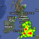

What is happening to Britain's
horse-chestnut trees?
Since 2002 Britain's conker trees have been under attack from a non-native moth — and you can help scientists at the Universities of Bristol and Hull monitor what's happening. The Conker Tree Science: Leaf Watch app, available for free from the iTunes App Store and Android Market, shows you how to identify affected trees and enables you to submit your geo-located leaf photos. This data will show our scientists where the moth is present within the UK today. Your reports will contribute to the Conker Tree Science research project.
Now help us check the results!
We've had a great response from our volunteers around the UK who have sent us valuable data. As with all scientific endeavour, though, we want to be 100% positive that our data are as accurate as they can be.
Help validate dataSee the results so far
- 
Take a look at the results from 2011 so far. A range of maps shows how the miner leaf moth is spreading across the UK.
More about the project
You can find more background about the project on the Our Web of Life website: www.ourweboflife.org.uk.